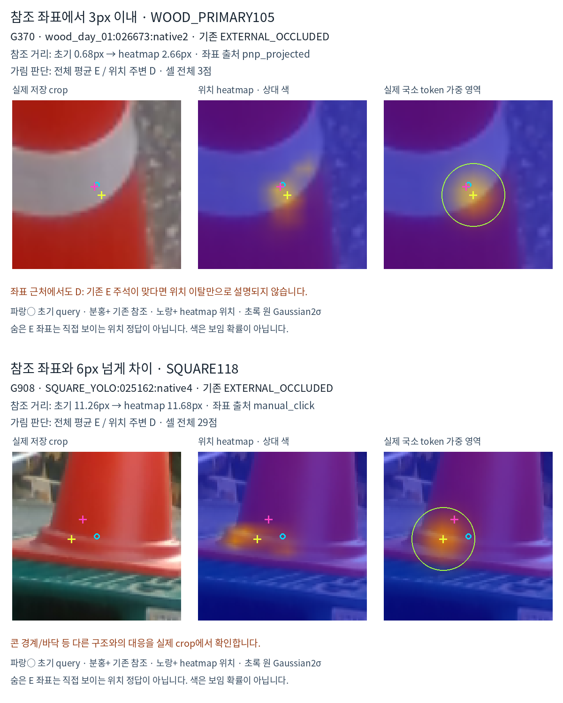

| 유형 | 참조 crop 밖 | crop 안 ≤3px | crop 안 3–6px | crop 안 >6px |
|---|---|---|---|---|
| ALL | 5 | 10 | 15 | 37 |
| WOOD_PRIMARY105 | 4 | 3 | 3 | 8 |
| SQUARE118 | 1 | 7 | 12 | 29 |
누락67점 중49점은 전체 평균의 E가 위치 주변의 D로 바뀐 경우,18점은 양쪽 모두 D입니다. 초기와 heatmap 위치 모두 참조에서3px 이내인8점에서도 D를 출력해 위치 이탈만으로 모든 누락을 설명할 수 없습니다.
G370은 참조에서2.66px인데 콘의 빨간 몸체/흰 띠에 위치합니다. 기존 E 주석이 맞다면 가림 판단 실패입니다. G908·G256은 콘 받침/바닥 쪽으로 옮겨 다른 구조를 읽습니다. G300·G1772는 목표 참조 위치가 검색 crop 밖입니다. G792·G1233·G1009처럼 팔레트 조각이 드러나는 경계는 정확한 native 대응 재검토가 필요하며, G996의 사용자 이견도 유지했습니다.

공통 문제는 뚜렷한 콘 경계·띠·받침·바닥·근처 팔레트 조각이 위치 근거가 된다는 점입니다. E에 위치 heatmap 정답을 주지 않았고 softmax는 항상 봉우리를 만듭니다. 국소 Gaussian은96crop에서σ9px로 주변을 읽으며 DINO token 자체도 문맥을 포함합니다. 위치가 가까운 것과 지정 점의 직접 보임은 별개입니다.
사람이 보임으로 주석하고 수동 좌표가 있는854점만 사후 분석했습니다. 원시 제안을 전부 적용한 결과는 실제 보임 승인 규칙을 검증한 결과가 아닙니다.
| 유형 | 방법 | ≤3px | 중앙값 px | P90 px |
|---|---|---|---|---|
| ALL | INITIAL | 376/854 | 3.56 | 10.33 |
| ALL | LOC_RAW | 482/854 | 2.70 | 7.58 |
| ALL | LOC_FROZEN_ACCEPTED | 461/854 | 2.79 | 8.40 |
| ALL | JOINT_RAW | 488/854 | 2.63 | 7.61 |
| ALL | JOINT_FROZEN_ACCEPTED | 457/854 | 2.78 | 9.09 |
| WOOD_PRIMARY105 | INITIAL | 153/323 | 3.26 | 18.95 |
| WOOD_PRIMARY105 | LOC_RAW | 137/323 | 3.40 | 20.63 |
| WOOD_PRIMARY105 | LOC_FROZEN_ACCEPTED | 140/323 | 3.50 | 20.94 |
| WOOD_PRIMARY105 | JOINT_RAW | 136/323 | 3.62 | 19.61 |
| WOOD_PRIMARY105 | JOINT_FROZEN_ACCEPTED | 140/323 | 3.62 | 21.32 |
| SQUARE118 | INITIAL | 223/531 | 3.68 | 9.11 |
| SQUARE118 | LOC_RAW | 345/531 | 2.37 | 5.83 |
| SQUARE118 | LOC_FROZEN_ACCEPTED | 321/531 | 2.58 | 6.54 |
| SQUARE118 | JOINT_RAW | 352/531 | 2.23 | 5.91 |
| SQUARE118 | JOINT_FROZEN_ACCEPTED | 317/531 | 2.49 | 6.96 |
정사각형은 JOINT 원시 위치 제안으로223→352/531점, 중앙값3.68→2.23px,P90 9.11→5.91px입니다. 목재는153→136/323점으로 개선되지 않았습니다. 기존 승인 적용 JOINT의3px 경계 악화59점 중55점은 최종3–6px,4점은6–10px,10px 초과는0입니다. 작은 경계 초과를 모두 큰 실패로 부르지 않습니다.
전체 수치 JSON · 가림 누락67점 · 수동 보임854점 · 위치 비교표 · 사례 선정·과거 RGB 노출 명시